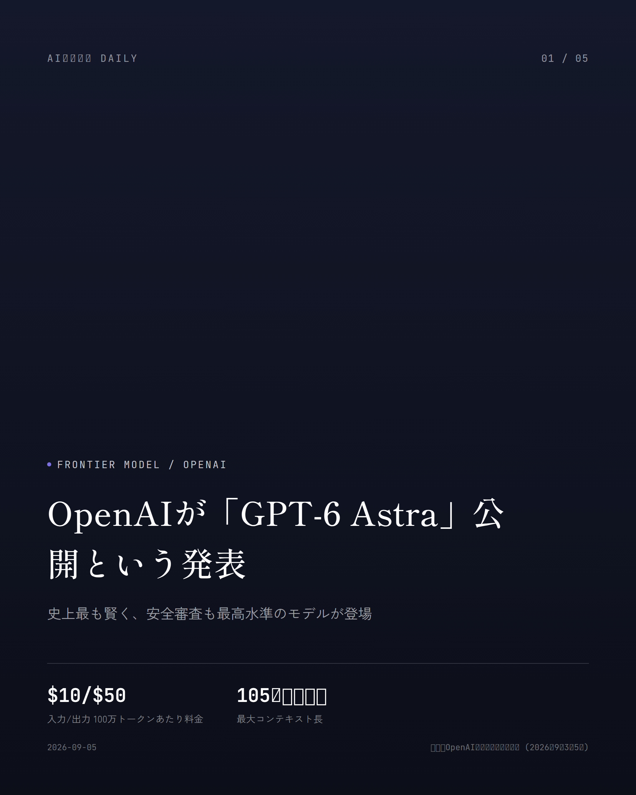
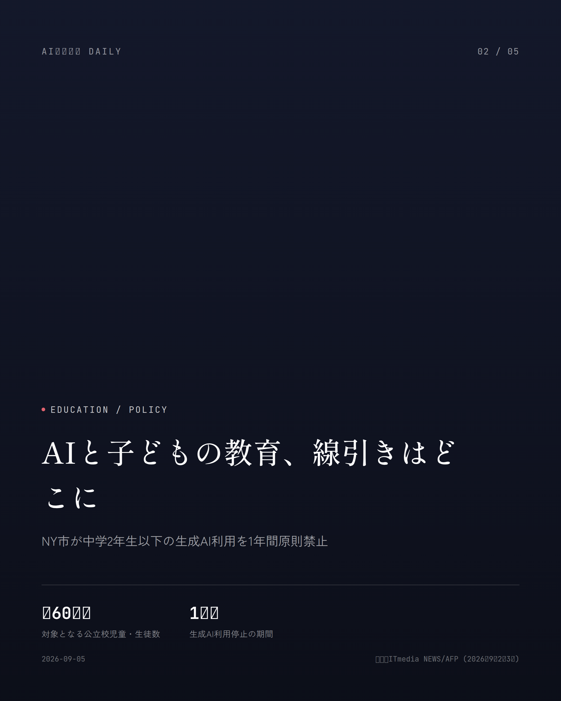
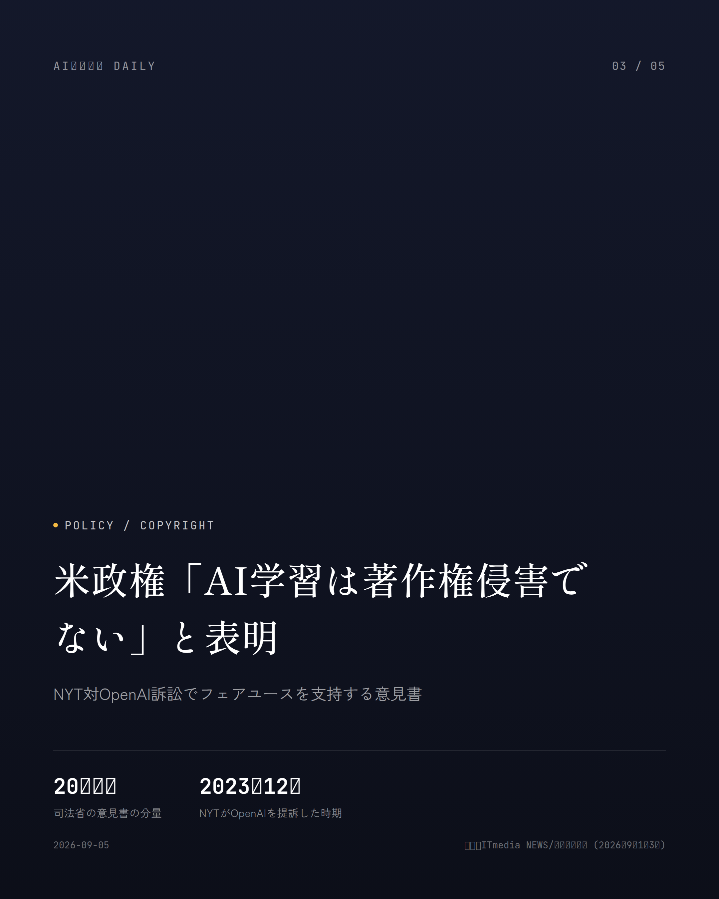
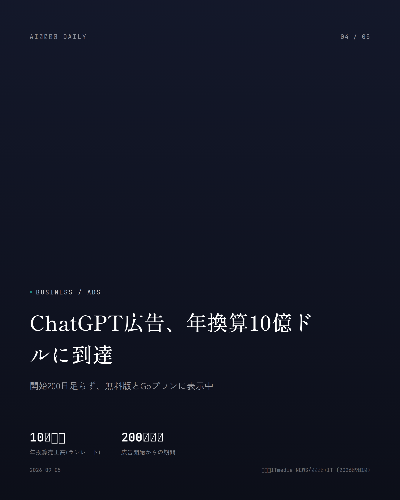
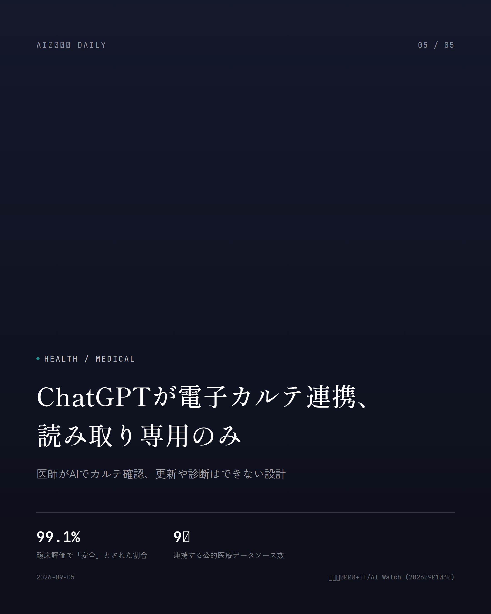

これは2026-09-05時点のアーカイブページです。最新のニュースはこちら
本サイトはアフィリエイトプログラムによる収益を得ている場合があります。
本サイトはGoogle AdSense等の広告配信サービスを利用しています。

Frontier Model / OpenAI
約1分で読める
OpenAIが「GPT-6 Astra」公開という発表
史上最も賢く、安全審査も最高水準のモデルが登場
OpenAIが2026年9月3日(米国時間)、新しい最上位モデル「GPT-6 Astra」を発表した。発表と同時にChatGPTの有料プランとAPIで使えるようになっていて、動きの早さにちょっと驚く。同社は「世界で最も賢く、最も整合性の高い」モデルだと胸を張っている。
気になる価格は入力100万トークンあたり10ドル、出力50ドル。最大105万トークンという長大な文脈を読み込めるのも強みだ。知識のカットオフは2026年4月30日となっている。
面白いのは安全面への向き合い方だ。OpenAIは事前に「サイバーセキュリティ能力が重大(Critical)な水準に達し得る」と判断し、高度なサイバー関連の利用は当面アルファテスターだけに絞るという、かなり慎重な公開手順を踏んだ。
なぜ重要か
GPT-6 Astraは数か月ぶりの大型フラグシップ更新で、仕事や学習でChatGPTを使っている人ほど性能アップを実感するはずだ。それに加えて、「重大なサイバー能力」を理由に安全対策を優先した初のモデルという立ち位置は、AIの実力とリスク管理がいよいよ同時進行になった節目として見逃せない。
出典：OpenAI公式発表／各種報道 (2026年9月3〜5日)

Education / Policy
約1分で読める
AIと子どもの教育、線引きはどこに
NY市が中学2年生以下の生成AI利用を1年間原則禁止
ニューヨーク市教育局が9月2日(現地時間)、幼稚園年長から8年生(日本の中学2年相当)までの児童・生徒による生成AIソフトの利用を、2026〜2027学年度から1年間原則禁止すると発表した。対象は公立校の約60万人で、心理的ケアを目的としたチャットボットの利用もこの中に含まれる。
高校生(9〜12年生)は一律禁止ではない。承認・審査済みの限定的なパイロットや職業準備プログラムに限り、教師の監督下での利用を認める形だ。全高校生には年2回、45分間のAIリテラシー教育を実施し、AIの仕組みやデータプライバシー、バイアスについても学ばせる。
マムダニ市長は「子供の学びと成長には、教師や同級生との関係を築き、難しい問題に自力で向き合う過程が必要だ」と説明している。なお教員が授業準備などの業務でAIを使うことは、これまで通り認められる。
なぜ重要か
全米最大級の学区が、生成AIと子どもの教育の距離感についてはっきりした方針を打ち出した格好で、他の自治体や学校の判断にも波及しそうだ。家庭でAIアプリを使う子どもを持つ親にとっても、学校のルールがどう変わるかは他人事ではない話題になる。
出典：ITmedia NEWS/AFP (2026年9月2〜3日)

Policy / Copyright
約2分で読める
米政権「AI学習は著作権侵害でない」と表明
NYT対OpenAI訴訟でフェアユースを支持する意見書
米司法省が9月1日(現地時間)、OpenAIを巡る著作権侵害訴訟でOpenAI側を支持する20ページの意見書を、ニューヨーク州南部地区連邦地裁に提出した。対象にはThe New York TimesやCNET運営元のZiff Davisなどが起こした訴訟が含まれる。
意見書の主張はこうだ。LLMが文章を学習する段階での著作物の複製は「変容的な利用」であり、フェアユース(公正利用)に当たる。学習はあくまで語彙や構文の統計的パターンを学ぶためのもので、著作物の表現そのものを再現する目的ではない、という理屈である。
国家安全保障の観点も強調されていて、AI学習に著作権者の許諾を必須とすれば米国のAI開発が停滞し、その制約を受けない競合国に有利になると指摘。有償ライセンスの義務化は大手テック企業しか負担できず、競争を阻害するとも述べている。
なぜ重要か
この意見書に裁判所を拘束する力はないが、NYT対OpenAIをはじめとする一連の著作権訴訟の行方には影響し得る。AIが記事や書籍をどこまで自由に学習に使えるかというルールは、ニュースやコンテンツを作る産業全体の収益構造、ひいては読者が接する情報の作られ方にまで波及する話だ。
出典：ITmedia NEWS/日本経済新聞 (2026年9月1〜3日)

Business / Ads
約1分で読める
ChatGPT広告、年換算10億ドルに到達
開始200日足らず、無料版とGoプランに表示中
OpenAIが8月31日、ChatGPT上の広告事業「ChatGPT Ads」の年換算売上高が10億ドル(約1,600億円)に達したと発表した。広告提供の開始からまだ200日足らずでの到達で、すでに数万社の広告主が利用しているというからかなりのペースだ。
日本でも6月からパイロット運用が始まっていて、無料プランと月額1,400円の「Go」プランを使う18歳以上のユーザーには広告が表示される。「Plus」「Pro」など上位プランには出ない仕組みだ。
インドや欧州、中東・北アフリカでは、企業が自分で広告を出稿できる「セルフサービス」の提供も始まった。日本もすでに対象に入っており、電通デジタルやHakuhodo DY ONEが取り扱いを開始している。
なぜ重要か
普段使っているChatGPTの無料版やGoプランに広告が出てくる仕組みが、想定以上のスピードで世界に広がっていることを示す発表だ。検索エンジンやSNSに次ぐ「AI広告」という新しい入り口が、すでに私たちの使うアプリの中に組み込まれ始めている。
出典：ITmedia NEWS/ビジネス+IT (2026年9月1日)

Health / Medical
約1分で読める
ChatGPTが電子カルテ連携、読み取り専用のみ
医師がAIでカルテ確認、更新や診断はできない設計
OpenAIが9月1日、医療機関向け「ChatGPT for Healthcare」を電子カルテ(EHR)システム「Epic」と連携させたと発表した。許可された患者情報をChatGPT上で呼び出せるようになり、診療記録や検査結果、薬剤情報などをまとめて確認できる。
医師は「前回受診から何が変わったか」「確認すべき検査値は何か」といった質問をChatGPTに投げかけられる仕組みだ。ただし連携はあくまで読み取り専用で、カルテの更新や医療指示の発行、患者へのメッセージ送信はできない。
あわせて、PubMedやClinicalTrials.govなど9つの公的医療データソースを横断検索できるプラグインも追加された。OpenAIによると、27の臨床用途を対象にした4,363件の評価のうち、99.1%が「安全」と判定されたという。
なぜ重要か
電子カルテは世界の大病院で広く使われている基幹システムで、そこにAIが直接つながることは医療現場の情報整理を大きく効率化しうる。読み取り専用・診断はしないという制限付きではあるものの、通院時に医師がAIをどう活用するかは今後変わっていきそうだ。
出典：ビジネス+IT/AI Watch (2026年9月1〜3日)
Consumer Tech / Google
Consumer Tech / Google
約1分で読める
Geminiが持ち物の場所を記憶する新機能
Android 9月アップデートで11個の新機能が順次配信
Googleが9月1日、Android向けの新機能をまとめた「Android Drop」9月版を公開し、11個の新機能を発表した。目玉の一つは、GeminiとFind Hubが連携し、紛失防止タグを付けていない持ち物の置き場所を記憶してくれる新機能だ。
「パスポートを寝室の引き出しに入れた」と話しかけるだけで、Geminiがその情報をFind Hubに保存してくれる。あとから場所を尋ねれば思い出せる仕組みで、写真を添付することもできる。Android 16以降の対応国・地域で近日提供され、日本も対象に含まれている。
このほか、乗り物酔いを軽減する「Motion Assist」や、カメラ映像を音声で説明する「Gemini Live」の新機能「Guided vision」なども順次展開されていく予定だ。
なぜ重要か
スマホのAIアシスタントが「物の場所を覚えておく」といった生活のちょっとした困りごとにまで入り込み始めている好例だ。難しい専門知識がなくても、普段使っているAndroidスマホの中で来週から体感できる変化として分かりやすい。
出典：財経新聞/Jetstream (2026年9月1〜2日)
Business / API Pricing
Business / API Pricing
約1分で読める
Anthropicが価格据え置きという発表
Claude Sonnet 5、9月の値上げ計画を撤回し低価格維持
Anthropicが、開発者向けAPIモデル「Claude Sonnet 5」について、2026年9月1日に予定していた価格改定を見送り、導入時の価格をそのまま標準価格にすると発表した。100万トークンあたり入力2ドル・出力10ドルの水準がそのまま維持される。
Sonnet 5は7月の提供開始時、上位モデル「Opus 4.8」の約4割の価格でありながら、その性能の9割程度を発揮するとして話題になったモデルだ。当初は9月から入力3ドル・出力15ドルへの値上げが予定されていた。
今回の据え置きで、企業やアプリ開発者はコストを増やさずにこのモデルを使い続けられることになる。
なぜ重要か
生成AIを組み込んだアプリやサービスにとって、APIの料金はそのまま運営コストに直結する。主要モデルの値上げ見送りは、開発者はもちろんその先にいる利用者の負担増を防ぐ材料になるし、競合との価格競争が激しさを増していることも透けて見える動きだ。
出典：Claude Platform リリースノート (2026年9月)
先頭に戻る